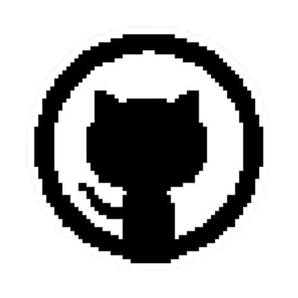

ㅤEsse site foi um trabalho em grupo pensando em estudantes de tecnologia que desejam seguir a carreira no front
end. Pensendo nisto, desenvolvemos um jogo para incentivar estudantes e com isso aprenderem de forma mais divertida.
ㅤㅤNosso projeto funciona da seguinte forma:ㅤㅤㅤㅤㅤㅤㅤㅤㅤㅤㅤㅤㅤㅤㅤㅤㅤㅤㅤㅤㅤㅤㅤㅤㅤ
ㅤㅤInicialmete o jogador pode escolher um "nick" de sua preferencia para se identificar dentro do jogo. Apos Entrar
o Jogador pode escolher uma opção dentre três pilares base da programação de front end ( HTML, CSS e JavaScript ). Logo, o jogador é direcionado a
uma pagina onde ele tem três opções de leveis para iniciar sua partida com as quest da materia escolhida. Durante a partida o jogador terá de responder algumas questões que
acumlará pontos.
Após o termino da partida é exibido uma tela onde se pode ver a pontuação dos jogadores, e os três primeiros lugares vencedores, que no caso
são os jagadores que acomularam mais pontos durante toda a partida. ㅤㅤㅤㅤㅤㅤㅤㅤㅤㅤㅤㅤ
ㅤㅤTodo esse projeto foi pensado e desenvolvido por um grupo de de quatro estudantes ( Ana Luiza paiva, Fernando Costa, Valquíria Martins, e Vinicios Costa ) da unidade de ensino Proz Educação, situada em Divinopolis-MG, com o
apoio do tutor Pedro Rafante. Logo abaixo esta disponibilizado os github dos estudantes que trabalharam nesse projeto, onde cada um foi fundamental
para esse resultado final.


Ana Luiza Paiva-> https://github.com/Keiqui
Fernando Costa-> https://github.com/fnandojrs
Valquíria Martins-> https://github.com/valquiria06